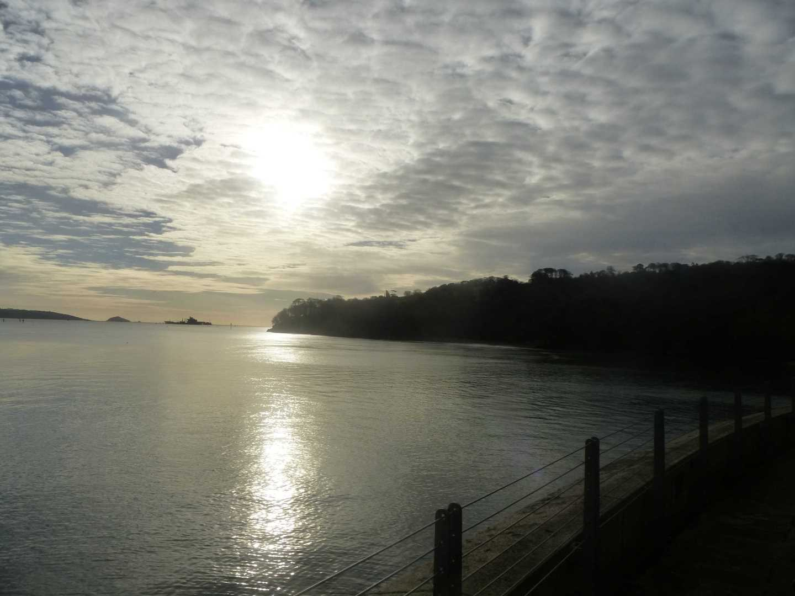
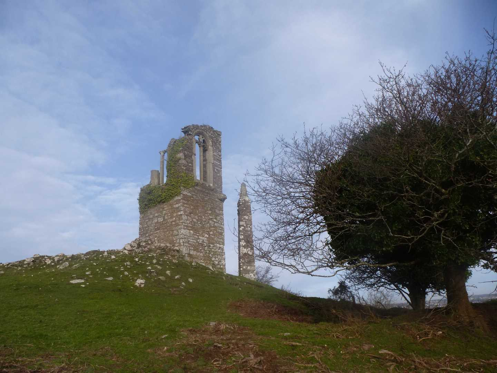

Start Ref: 454 534
End Ref: 454 534
Distance: 6 miles
Time: 3hrs
For this circular walk, I have suggested a time frame of 3 hours, but this allows for purely walking. I would suggest that you make a day of it and stop a while on the beaches or pubs in Kingsand and Cawsand and enjoy this beautiful section of Cornwall.
We park our car in the little village of Cremyll and walk south along the frontage of the River Tamar as it spills out into The Sound, and passes underneath Mount Edgcumbe Estate. The footpath is well signposted, so we can relax as we walk past cannons and wonder at the Folly on our right. When last here at around 8am, I watched the deer grazing in the park whilst admiring the view from this Folly.
Following the tree lined slopes we pass Ravenness Point and head on to Redding Point, where we are rewarded with fine views over St. Nicholas`s Island (more commonly known as Drake`s) and of the Plymouth Breakwater. We continue on –and up – as we head around the coast and start to turn our back to Devon, and now find ourselves looking down (from behind) on Fort Picklecombe. This impressive structure is now a collection of private accommodations but we walk quite close as we follow the footpath inland and around the sides of the valley and then back towards the coast on the far side of the Fort. Here we need to ensure that we keep to the coastal path rather than deviating inland.
The path leads us across a field, and gives us the option of walking down to the mini lighthouse at Hooe Lake Point, just as we join the road. We will cross the road and rejoin the coastal path, as it takes us along the side of the cliffs as slowly, the remains of a fort at Minadew Brakes comes into view. This fort we will later be walking closer too as we start our return leg, but for the time being we are going to continue on into Kingsand.
Enjoy the clock tower, enjoy the beaches and look for the old boundary mark between Cornwall and Devon, as the border has shifted over the years.
After refreshing ourselves, we are going to head back to the road where our footpath first joined the village, and we are going to head up hill where we will find a footpath off to our right. This path (narrow and tree lined) leads us gently to the top of Minadew Brakes and around the base of the ruined fort. Here the wide path leads us further on and up until we reach the road.
At the road we are going to turn right and follow it up past Maker Farm and then around to the right, where we will then find a footpath off to our left which will take us through two fields. Following these fields we drop down into a lane and then back onto the footpath.
NOTE; here on the right we find (tucked away) a superb spot for cream teas. An absolute delight.
Continue to follow the path and the field stiles all of which are well marked until we arrive at the gates of the Church. We are now at the highest point of our walk and from here we are going to cross the road and head into the winding path that leads us through the trees that are Pigshill Wood. As we come out of the woods, we further descend over a field before crossing another road and then we are back to walking alongside the waters edge.
Here we find ourselves beside Millbrook Lake and as the path winds its way to the east we walk past the remains of a stone windmill and suddenly come the hidden gem that is Empacombe. This private rear gated entrance with quay, guards the Mount Edgcumbe Estate, and we need to be respectful as we cross in front of the private houses and then follow the path as it runs with the gravelled road.
Staying with the path, we soon come to an obelisk and then re-emerge in the village of Cremyll as the path runs right alongside the car park where we have left our car.
Although the walk is now finished, I am going to suggest some changes. When at the Church, you could follow themain road for a short distance (as it heads towards Cremyll) and view St. Julian`s Well, which is right on the roadside, before heading back to the Church and joining the footpath.
However, when I next do this walk, I am only going to walk from Cremyll to Cawsand, as from here, I intend to catch the Cawsand foot ferry back to Plymouth, before walking across Plymouths front and back to marina near Mount Wise and then catching the Cremyll foot ferry back. This will include my love of being on the water as well as walking.
I hope that you too, enjoy this walk.